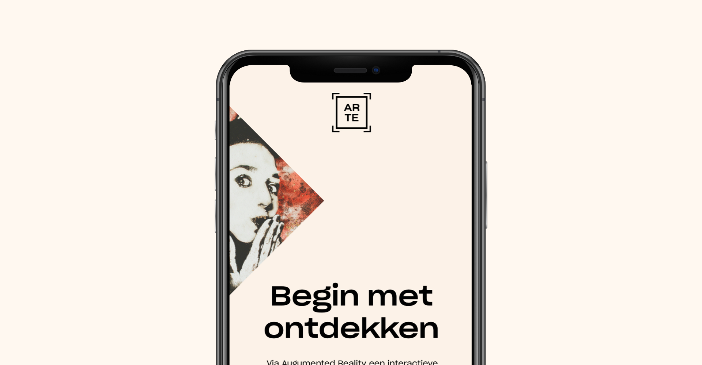

Case info
For our last project in year one we got a bit of a different project due to the whole COVID-19 situation that just started. We got the option to choose your own project. I really wanted to do something in AR and I combined it with a love I slowly developed for art. So I created an interactive museum tour.
Role(s)
Prototype, Visual design, desk research.
Approach
I went on a little journey for my design style for this project. Most people when they think about art or museums have a classic feel to it, some people might have a different feeling. That's why it is very hard to create a main design language for everyone to enjoy. Also, I needed a way to incorporate the tech style from the augmented reality function that's in the application.
In the end I came up with the logo on the right, a simple sans serif font (sharp grotesk Book & Medium) in full caps that works for most art styles and isn't too modern or to classic. I added a frame around it to make it look like the paintings or artworks in a museum. For the finishing touch I added the four corners around the frame that refer to the augmented reality scan.